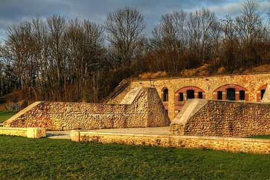
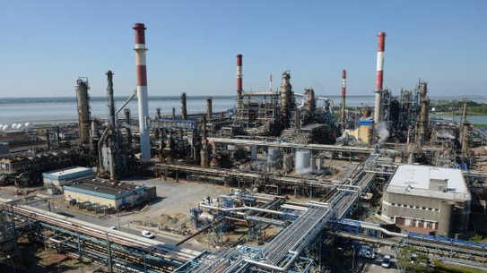
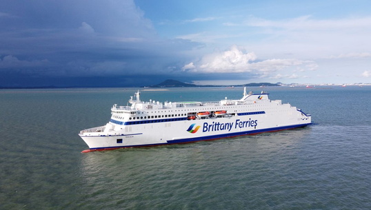
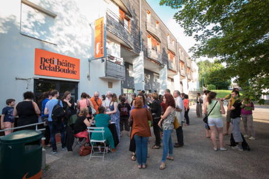

<!--Div principale-->
<div class="p-5 mb-4 bg-light rounded-3">
    <div class="container-fluid py-5">
        <div class="row row-cols-1 row-cols-md-2 g-4">

            <!--Liste des projets-->
            <div class="visible col">
                <div class="card card border-secondary mb-3">
                    
                    <div class="card-body text-secondary">
                        <h5 class="card-title">Le projet Chateau</h5>
                        <p class="card-text">Projet issu de mes experiences professionnelles antérieures à la
                            formation.</p>
                        <a class="btn btn-success" id="chateau" onclick="displayNOK(this.id)">Aller au projet</a>
                    </div>
                    <div class="card-footer">
                        <small class="text-muted">Compétences :</small>
                    </div>
                </div>
            </div>
            <div class="visible col">
                <div class="card card border-secondary mb-3">
                    
                    <div class="card-body text-secondary">
                        <h5 class="card-title">Le projet pétrole</h5>
                        <p class="card-text">Projet issu de mes experiences vecues durant la formation.</p>
                        <a class="btn btn-success" id="petrole" onclick="displayNOK(this.id)">Aller au projet</a>
                    </div>
                    <div class="card-footer">
                        <small class="text-muted">Compétences :</small>
                    </div>
                </div>
            </div>
            <div class="visible col">
                <div class="card card border-secondary mb-3">
                    
                    <div class="card-body text-secondary">
                        <h5 class="card-title">Le projet Bateau</h5>
                        <p class="card-text">Projet issu de mes experiences vecues durant la formation.</p>
                        <a class="btn btn-success" id="bateau" onclick="displayNOK(this.id)">Aller au projet</a>
                    </div>
                    <div class="card-footer">
                        <small class="text-muted">Compétences :</small>
                    </div>
                </div>
            </div>
            <div class="visible col">
                <div class="card card border-secondary mb-3">
                    
                    <div class="card-body text-secondary">
                        <h5 class="card-title">Le projet Festival</h5>
                        <p class="card-text">Projet issu de mes experiences professionnelles antérieures à la
                            formation.</p>
                        <a class="btn btn-success" id="festival" onclick="displayNOK(this.id)">Aller au projet</a>
                    </div>
                    <div class="card-footer">
                        <small class="text-muted">Compétences :</small>
                    </div>
                </div>
            </div>
        </div>

        <!--Détails des projets-->
        <div class="row">
            <div class="invisible card" id="chateauDetails">
                <div class="card-header">
                    Projet Château
                </div>
                <div class="card-body">
                    <h5 class="card-title">La réussite dans la diversité. En avant l'Histoire.</h5>
                    <div class="card-text">
                        <h1>Le contexte</h1>
                        <p>Le projet Chateau s'inscrit dans le cadre d'une activité de bénévolat.</p>
                        <p>L'association Concordia (<a href="https://www.concordia.fr/">ici</a>) organise des échanges
                            internationaux, autour de projets culturels, visant a promouvoir l'entre aide et la
                            tolérance
                            entre les peuples.</p>
                        <p>Le projet, pour l'année 2016 consistait à nettoyer et restaurer deux murs parallèles dans
                            l'ancienne enceinte du fort de Chelles ainsi qu'a faire la promotion du patrimoine culturel
                            ainsi préservé et de l'action de Concordia dans le cadre de ce chantier. Cette action était
                            réalisée en partenariat avec la mairie de Chelles, notamment chargée de l'approvisionnement
                            logistique et matériel. Par ailleurs, la mairie fournissait un lieu de résidence ainsi qu'un
                            mode de transport pour la durée du séjour.</p>
                        <h1>L'équipe projet</h1>
                        <ul>
                            <li>1 responsable technique en charge de la réalisation de la restauration</li>
                            <li>1 animateur vie de groupe, en charge de la vie du groupe, des relations avec la
                                collectivité,
                                de la médiation et du budget.
                            </li>
                            <li>12 bénévoles internationaux (3 espagnoles, 2 polonaises, 2 turques, 2 coréennes, 1
                                russes
                                et 2 françaises)
                            </li>
                        </ul>
                        <br>
                        <h1>Le projet</h1>
                        <p>En tant qu'animateur vie de groupe j'étais chargé de l'encadrement des volontaires
                            internationaux,
                            de la gestion du budget, de la mise en place d'animations et de temps de réflexion autour du
                            patrimoine, médiation auprès du public local (travail sur la mémoire et le patrimoine,
                            rencontre avec les habitants), de la représentation associative (travail avec le bureau
                            d'information jeunesse, les élus locaux, etc.).</p>
                        <p>Dans les faits, j'étais chargé d'orchestrer la vie des bénévoles sur le camp et d'articuler
                            les temps de travail et ceux de loisirs, dans le cadre des engagements projet et de
                            l'enveloppe
                            budgétaire allouée au séjour. J'étais par ailleurs , l'interlocuteur tant de l'association
                            que des collectivités conjointement partie prenante sur le chantier international.</p>
                        <br>
                        <h1>Compétences</h1>
                        <p>Gestion de projet, Gestion d'équipe, gestion financière, communication.</p>
                    </div>
                </div>
            </div>

            <div class="invisible card" id="bateauDetails">
                <div class="card-header">
                    Projet Bateau
                </div>
                <div class="card-body">
                    <h5 class="card-title">Maintenance au long court</h5>
                    <div class="card-text">
                        <h1>Le contexte</h1>
                        <p>Le projet Bateau s'inscrit dans le cadre d'un contrat de TMA en régis, sur le logiciel
                            Maximo, pour une entreprise de transport maritime de fret et de personnes.</p>
                        <p>Plus précisément, il s'agit d'une TMA (Tiers Maintenance Applicative) Maximo Corrective et
                            évolutive. Sur la base d'un ETP, nous nous engageons à répondre sans limites de délais,
                            mais en proportion de l'urgence, aux demandes de correction de bugs et d'évolutions
                            spécifiques du client.</p>
                        <p>Le projet s'inscrit dans un processus de migration/monté de version et de développement de
                            la flotte de serveur, afin d'équiper chaque bateau de notre client.</p>
                        <h1>L'équipe projet</h1>
                        <p>Dans un premier temps :</p>
                        <ul>
                            <li>La MOA chargé des spécifications du besoin et des tests d'intégrations</li>
                            <li>La MOE chargé de la catégorisation des tickets et de la répartition des tickets et
                                d'une partie des développements
                            </li>
                            <li>Un chef de projet client</li>
                            <li>Un développeur prestataire (moi)</li>
                        </ul>
                        <p>Dans un second temps :</p>
                        <ul>
                            <li>Coté client :
                                <ul>
                                    <li>La MOA</li>
                                    <li>Un chef de projet</li>
                                </ul>
                            </li>
                            <li>Coté prestataire :
                                <ul>
                                    <li>Un chef de projet technique(moi)</li>
                                    <li>Une équipe de deux développeurs</li>
                                </ul>
                            </li>
                        </ul>
                        <br>
                        <h1>Le projet</h1>
                        <p>En tant que développeur junior, j'ai été en charge des bugs et évolutions mineurs tels que
                            la modification d'interface, la correction de code, l'extension de processus et leurs
                            éventuelles adaptations.</p>
                        <p>En tant que développeur plus confirmé, j'ai continué les corrections et les évolutions,
                            notamment au travers de la conception et de la réalisation de nouvelles applications et le
                            déploiement des développements (interne et externe) en test/intégration et production.</p>
                        <p>Enfin, en tant CP technique, j'ai eu la responsabilité de former et superviser une équipe de
                            deux développeurs juniors (chiffrage, test, livraisons) et de gérer les relations avec notre
                            client (participation au copil hebdomadaires, suivi de la charge).</p>
                        <br>
                    </div>
                </div>
                <div class="card-footer">
                    <small class="text-muted">Gestion de projet, Gestion d'équipe, conception de base de données</small>
                </div>
            </div>

            <div class="invisible card" id="festivalDetails">
                <div class="card-header">
                    Projet Festival
                </div>
                <div class="card-body">
                    <h5 class="card-title">Gerer un projet culturel de spectacle vivant, en sortant d'études.</h5>
                    <div class="card-text">
                        <h1>Le contexte</h1>
                        <p>Le projet Festival s'inscrit dans le cadre d'un contrat de service civique comme première
                            expérience en tant que chargé de projet culturel.</p>
                        <p>Tous les ans, le CROUS de Bourgogne Franche Comté organise un festival d'arts vivant, le
                            Festival de la Bouloie.</p>
                        <p>Ce festival d'une durée moyenne d'une semaine s'adresse principalement aux étudiants sous la
                            responsabilité des Crous.</p>
                        <h1>L'équipe projet</h1>
                        <ul>
                            <li>Emilie Camelin, ma tutrice</li>
                            <li>Une personne en charge du traitement administratif</li>
                            <li>Une personne en charge de la communication interne</li>
                            <li>6 compagnies de spectacle vivants</li>
                            <li>2 ingénieurs son et lumière + 3 ingénieurs lumières (stagiaires)</li>
                            <li>1 photographe</li>
                            <li>1 équipes de tournages</li>
                        </ul>
                        <h1>Le projet</h1>
                        <p>En tant que Chargé de l'organisation et du développement du Festival de la Bouloie mon
                            objectif était de développé la portée et la diversité de la programmation du festival de la
                            Bouloie, dans le cadre de la refonte des régions (fusion bourgogne et franche comté) et de
                            la concurrence d'un festival similaire en Bourgogne.
                            <br>
                            J'étais chargé de diversifier la
                            programmation, jusqu'alors centré sur le théâtre et la dance et d'ouvrir l'appel à
                            candidature sur toute la "grande région".</p>
                        <p>Dans les actes, j'ai rédigé et promus l'appel à projet pour les artistes, j'ai encadré
                            les bénévoles, suivi du budget (suivi des dépenses et bilan comptable de l'évènement). Je me
                            suis par ailleurs chargé de la mise en place des spectacles (planning, programmation,
                            staffing des équipes techniques), de la diffusion de la campagne de communication (campagne
                            d'affichage, interview radio, etc...). J'ai aussi participé au jury de sélection des
                            compagnies de spectacle vivant, rédigé l'appel à projet pour le graphiste et conduits
                            les différents entretient.</p>
                        <p>Le festival à durée 5 jours, nous avons produit 6 spectacles (dont deux d'art
                            circassien) sur une douzaine de candidatures et maintenu la fréquentation du festival.</p>
                    </div>
                </div>
                <div class="card-footer">
                    <small class="text-muted">Compétences : Gestion de projet, Gestion d'équipe, gestion financière,
                        communication</small>
                </div>
            </div>

            <div class="invisible card" id="petroleDetails">
                <div class="card-header">
                    Featured
                </div>
                <div class="card-body">
                    <h5 class="card-title">Special title treatment</h5>
                    <p class="card-text">With supporting text below as a natural lead-in to additional content.</p>
                </div>
                <div class="card-footer">
                    <small class="text-muted">Compétences : </small>
                </div>
            </div>

            <!--<div class="invisible card" id="">
                <div class="card-header">
                    Featured
                </div>
                <div class="card-body">
                    <h5 class="card-title">Special title treatment</h5>
                    <p class="card-text">With supporting text below as a natural lead-in to additional content.</p>
                </div>
                <div class="card-footer">
                    <small class="text-muted">Compétences : </small>
                </div>
            </div>-->
        </div>

        <!--Boutton de retour à la liste-->
        <a class="d-grid gap-2 col-6 mx-auto btn btn-success invisible standard" id="goBack" onclick="displayOK()">
            Retourner à la liste</a>
    </div>
</div>